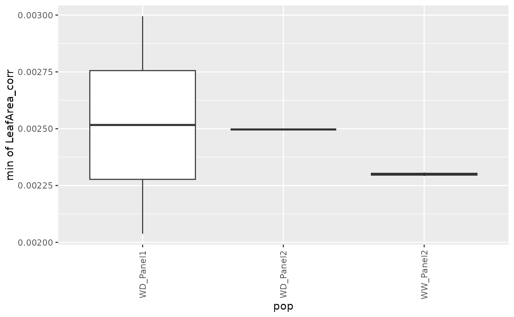
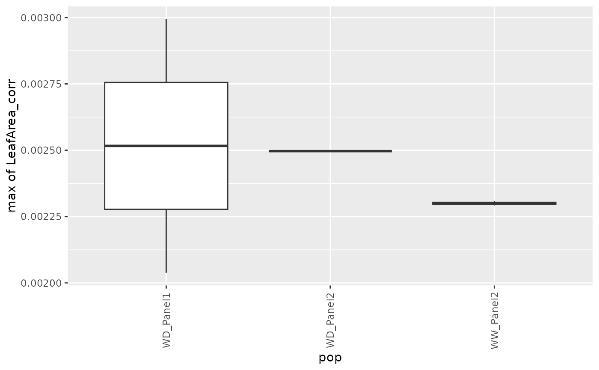

Extract estimates from fitted splines.
Source:R/estimateSplineParameters.R
estimateSplineParameters.RdFunction for extracting parameter estimates from fitted splines on a specified interval.
Arguments
- x
An object of class HTPSpline, the output of the
fitSplinefunction, or class splineHDm, the output of thefitSplineHDMfunction- estimate
The P-Spline component for which the estimate should be extracted, the predictions, the first derivatives or the second derivatives ("derivatives2")
- what
The types of estimate that should be extracted. Either minimum ("min"), maximum ("max"), mean, area under the curve ("AUC") or a percentile. Percentiles should be given as p + percentile. E.g. for the 10th percentile specify what = "p10". Multiple types of estimate can be extracted at once.
- AUCScale
The area under the curve is dependent on the scale used on the x-axis. By default the area is computed assuming a scale in minutes. This can be changed to either hours or days.
- timeMin
The lower bound of the time interval from which the estimates should be extracted. If
NULLthe smallest time value for which the splines were fitted is used.timeMinshould be given as a numerical value that corresponds to the time scale used for fitting the splines. See the examples.- timeMax
The upper bound of the time interval from which the estimates should be extracted. If
NULLthe largest time value for which the splines were fitted is used.timeMinshould be given as a numerical value that corresponds to the time scale used for fitting the splines. See the examples.- genotypes
A character vector indicating the genotypes for which estimates should be extracted. If
NULL, estimates will be extracted for all genotypes for which splines where fitted.- plotIds
A character vector indicating the plotIds for which estimates should be extracted. If
NULL, estimates will be extracted for all plotIds for which splines where fitted.- fitLevel
A character string indicating at which level of the data the parameter estimates should be made. Only used for splines fitted using
fitSplineHDM.
See also
Other functions for spline parameter estimation:
plot.splineEst()
Examples
### Estimate parameters for fitted P-splines.
## Run the function to fit P-splines on a subset of genotypes.
subGeno <- c("G160", "G151")
fit.spline <- fitSpline(inDat = spatCorrectedVator,
trait = "EffpsII_corr",
genotypes = subGeno,
knots = 50)
## Estimate the maximum value of the predictions at the beginning of the time course.
## The spline was fitted at a timePoints scale, i.e. date-time so
## timeMin and timeMax should be given at this scale as well.
paramVator <- estimateSplineParameters(x = fit.spline,
estimate = "predictions",
what = "max",
timeMin = 1527784620,
timeMax = 1528500000,
genotypes = subGeno)
head(paramVator)
#> genotype plotId max_predictions max_timeNumber max_timePoint
#> 1 G151 c13r1 0.6916861 636000 2018-06-08 01:17:00
#> 2 G151 c15r48 0.7030388 651200 2018-06-08 05:30:20
#> 3 G151 c1r16 0.6953883 651200 2018-06-08 05:30:20
#> 4 G151 c21r25 0.7324238 166400 2018-06-02 14:50:20
#> 5 G151 c2r7 0.6942117 651200 2018-06-08 05:30:20
#> 6 G151 c6r46 0.6897347 655200 2018-06-08 06:37:00
## Create a boxplot of the estimates.
plot(paramVator, plotType = "box")
## Estimate the minimum and maximum value of the predictions.
paramVator2 <- estimateSplineParameters(x = fit.spline,
estimate = "predictions",
what = c("min", "max"),
genotypes = subGeno)
head(paramVator2)
#> genotype plotId min_predictions min_timeNumber min_timePoint
#> 1 G151 c13r1 0.4256623 795200 2018-06-09 21:30:20
#> 2 G151 c15r48 0.3575513 775200 2018-06-09 15:57:00
#> 3 G151 c1r16 0.3769714 775200 2018-06-09 15:57:00
#> 4 G151 c21r25 0.3013801 787200 2018-06-09 19:17:00
#> 5 G151 c2r7 0.3558154 776800 2018-06-09 16:23:40
#> 6 G151 c6r46 0.3613267 776800 2018-06-09 16:23:40
#> max_predictions max_timeNumber max_timePoint
#> 1 0.7400419 1212800 2018-06-14 17:30:20
#> 2 0.7367294 1207200 2018-06-14 15:57:00
#> 3 0.7312961 1214400 2018-06-14 17:57:00
#> 4 0.7337103 1214400 2018-06-14 17:57:00
#> 5 0.7353195 1204000 2018-06-14 15:03:40
#> 6 0.7334287 1214400 2018-06-14 17:57:00
### Estimate parameters for fitted HDM-splines.
## The data from the Phenovator platform have been corrected for spatial
## trends and outliers for single observations have been removed.
## We need to specify the genotype-by-treatment interaction.
## Treatment: water regime (WW, WD).
spatCorrectedArch[["treat"]] <- substr(spatCorrectedArch[["geno.decomp"]],
start = 1, stop = 2)
spatCorrectedArch[["genoTreat"]] <-
interaction(spatCorrectedArch[["genotype"]],
spatCorrectedArch[["treat"]], sep = "_")
## Fit P-Splines Hierarchical Curve Data Model for selection of genotypes.
fit.psHDM <- fitSplineHDM(inDat = spatCorrectedArch,
trait = "LeafArea_corr",
genotypes = c("GenoA14_WD", "GenoA51_WD",
"GenoB11_WW", "GenoB02_WD",
"GenoB02_WW"),
time = "timeNumber",
pop = "geno.decomp",
genotype = "genoTreat",
plotId = "plotId",
difVar = list(geno = FALSE, plot = FALSE),
smoothPop = list(nseg = 4, bdeg = 3, pord = 2),
smoothGeno = list(nseg = 4, bdeg = 3, pord = 2),
smoothPlot = list(nseg = 4, bdeg = 3, pord = 2),
weights = "wt",
trace = FALSE)
## Estimate minimum, maximum, and mean for predictions at the genotype level.
## The spline was fitted at the timeNumber scale, so timeMax
## should be given at that scale as well.
paramArch <- estimateSplineParameters(x = fit.psHDM,
what = c("min", "max", "mean"),
fitLevel = "geno",
estimate = "predictions",
timeMax = 28)
head(paramArch)
#> pop genotype min_predictions min_timeNumber min_timePoint
#> 1 WD_Panel1 GenoA14_WD 0.002037944 0 2017-04-13
#> 2 WD_Panel1 GenoA51_WD 0.002994956 0 2017-04-13
#> 3 WD_Panel2 GenoB02_WD 0.002496701 0 2017-04-13
#> 4 WW_Panel2 GenoB02_WW 0.002307846 0 2017-04-13
#> 5 WW_Panel2 GenoB11_WW 0.002291758 0 2017-04-13
#> max_predictions max_timeNumber max_timePoint mean_predictions
#> 1 0.002037944 0 2017-04-13 0.002037944
#> 2 0.002994956 0 2017-04-13 0.002994956
#> 3 0.002496701 0 2017-04-13 0.002496701
#> 4 0.002307846 0 2017-04-13 0.002307846
#> 5 0.002291758 0 2017-04-13 0.002291758
## Create a boxplot of the estimates.
plot(paramArch, plotType = "box")


 ## Estimate area under the curve for predictions at the plot level.
paramArch2 <- estimateSplineParameters(x = fit.psHDM,
what = "AUC",
fitLevel = "plot",
estimate = "predictions")
head(paramArch2)
#> pop genotype plotId AUC_predictions
#> 1 WD_Panel1 GenoA51_WD c12r17 389.9525
#> 2 WD_Panel1 GenoA14_WD c12r19 308.4269
#> 3 WD_Panel1 GenoA51_WD c13r13 362.0956
#> 4 WD_Panel1 GenoA14_WD c13r33 362.2137
#> 5 WD_Panel1 GenoA51_WD c16r23 339.7837
#> 6 WD_Panel1 GenoA14_WD c16r35 354.3651
## Estimate area under the curve for predictions at the plot level.
paramArch2 <- estimateSplineParameters(x = fit.psHDM,
what = "AUC",
fitLevel = "plot",
estimate = "predictions")
head(paramArch2)
#> pop genotype plotId AUC_predictions
#> 1 WD_Panel1 GenoA51_WD c12r17 389.9525
#> 2 WD_Panel1 GenoA14_WD c12r19 308.4269
#> 3 WD_Panel1 GenoA51_WD c13r13 362.0956
#> 4 WD_Panel1 GenoA14_WD c13r33 362.2137
#> 5 WD_Panel1 GenoA51_WD c16r23 339.7837
#> 6 WD_Panel1 GenoA14_WD c16r35 354.3651